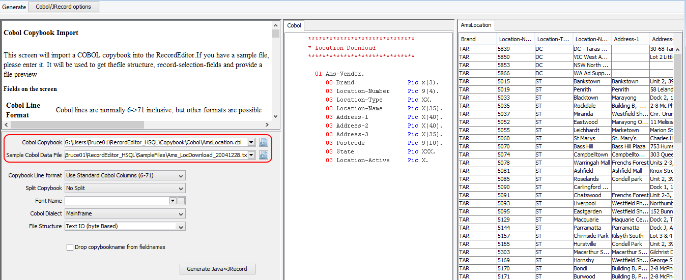
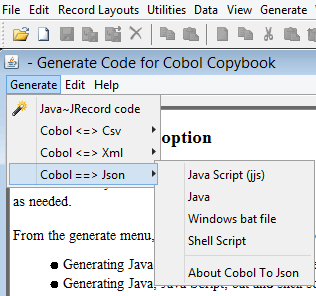
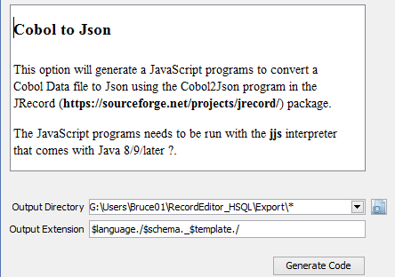
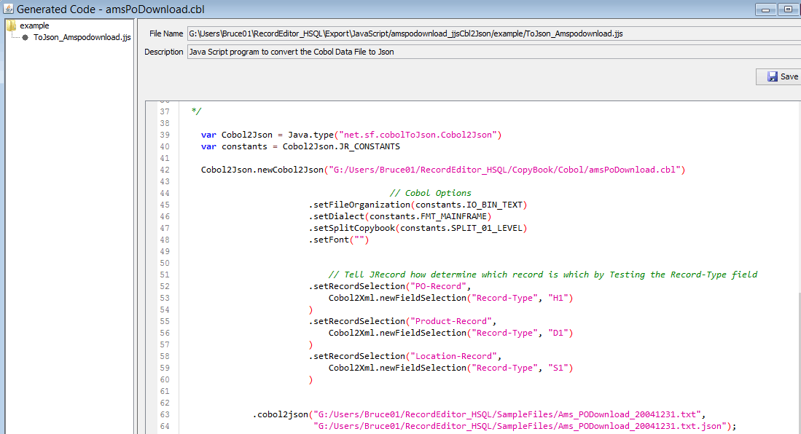

The CobolToJson (subproject of JRecord) package will convert Cobol Data files to Json.
The project supports several Cobol dialects + number of other options. CobolToJson depends on the following projects:
This project will take a Cobol-Copybook and Cobol-Data-File
Cobol-Copybook:
9 000900 03 DTAR020-KCODE-STORE-KEY. 10 001000 05 DTAR020-KEYCODE-NO PIC X(08). 11 001100 05 DTAR020-STORE-NO PIC S9(03) COMP-3. 12 001200 03 DTAR020-DATE PIC S9(07) COMP-3. 13 001300 03 DTAR020-DEPT-NO PIC S9(03) COMP-3. 14 001400 03 DTAR020-QTY-SOLD PIC S9(9) COMP-3. 15 001500 03 DTAR020-SALE-PRICE PIC S9(9)V99 COMP-3.
Cobol-Data-File:
And the script to convert the Cobol Data file to an Json file:
../lib/Cobol2Json.bat/sh -cobol cobol/DTAR020.cbl ^
-font cp037 -fileOrganisation FixedWidth ^
-input in/DTAR020.bin ^
-output out/DTAR020_A.json
And the Json output
1 { 2 "DTAR020" : [ { 3 "DTAR020-KCODE-STORE-KEY" : { 4 "DTAR020-KEYCODE-NO" : "69684558", 5 "DTAR020-STORE-NO" : 20 6 }, 7 "DTAR020-DATE" : 40118, 8 "DTAR020-DEPT-NO" : 280, 9 "DTAR020-QTY-SOLD" : 1, 10 "DTAR020-SALE-PRICE" : 19.00 11 }, { 12 "DTAR020-KCODE-STORE-KEY" : { 13 "DTAR020-KEYCODE-NO" : "69684558", 14 "DTAR020-STORE-NO" : 20 15 }, 16 "DTAR020-DATE" : 40118, 17 "DTAR020-DEPT-NO" : 280, 18 "DTAR020-QTY-SOLD" : -1, 19 "DTAR020-SALE-PRICE" : -19.00 20 }, { 21 "DTAR020-KCODE-STORE-KEY" : {
These are the options you can use when calling <b>Cobol2Json</b> programs to convert Cobol data files to Json Files:
-cobol - Cobol copybook used to "interpret" the data (you must supply either a cobol or cb2xml copybook
-cb2xml - Cb2xml copybook used to "interpret" the data
-input - Input file
-output - Output file
-font - Characterset used in the Cobol data file (e.g. IBM037 for US-EBCIDIC)
-dropCopybookName - (true/false) wether to drop the cobol copybook name from the start of the Json Tags
-tagFormat - How Cobol Variable names are reformated to Json tags:
Asis - Use the Cobol Variable name
Underscore - Convert - to _, COBOL-VAR-NAME ==> COBOL_VAR_NAME
CamelCase - Convert to Camel Case, COBOL-VAR-NAME ==> cobolVarName
-fileOrganisation - "file organization" of the Cobol data file
Text - Standard Windows/Unix text file (single byte character-set)
FixedWidth - File where lines (records) are the same length no \n
Mainframe_VB - Mainframe VB, file consists of <record-length><record-data>
GNUCobol_VB - GNU Cobol VB, file consists of <record-length><record-data>
-dialect - Cobol Dialect
Mainframe - Mainframe cobol
Futjitsu - Fujitsu PC cobol
GNUCobol - GNU Cobol (little endian, ie intel)
GNUCobolBE - GNU Cobol (big endian, ie IBM, Sun(oracle))
-split - Option for Splitting Copybook into seperate records
None - No Split
01 - Split on 01
Highest - On Highest Repeating
-recordSelection - Record Selection, can be used multiple time,
format: -recordSelection RecordName field=value
-recordParent - Record Parent, can be used multiple time,
format: -recordParent RecordName ParentRecord
The RecordEditor CodeGen of the RecordEditor will generate bat/shell scripts from a Cobol copybook
../lib/Cobol2Json.bat -cobol G:/Users/BruceTst01/RecordEditor_HSQL/CopyBook/Cobol/DTAR020.cbl ^
-fileOrganisation FixedWidth ^
-font cp037 ^
-input G:/Users/BruceTst01/RecordEditor_HSQL/SampleFiles/DTAR020.bin ^
-output out/DTAR020.bin.json
Json output:
1 { 2 "DTAR020" : [ { 3 "DTAR020-KCODE-STORE-KEY" : { 4 "DTAR020-KEYCODE-NO" : "69684558", 5 "DTAR020-STORE-NO" : 20 6 }, 7 "DTAR020-DATE" : 40118, 8 "DTAR020-DEPT-NO" : 280, 9 "DTAR020-QTY-SOLD" : 1, 10 "DTAR020-SALE-PRICE" : 19.00 11 }, { 12 "DTAR020-KCODE-STORE-KEY" : { 13 "DTAR020-KEYCODE-NO" : "69684558", 14 "DTAR020-STORE-NO" : 20 15 }, 16 "DTAR020-DATE" : 40118, 17 "DTAR020-DEPT-NO" : 280, 18 "DTAR020-QTY-SOLD" : -1, 19 "DTAR020-SALE-PRICE" : -19.00 20 }, { 21 "DTAR020-KCODE-STORE-KEY" : {
This converts a multi record file into Json. Please note the use of
split | used to define how the Cobol Copybook is split into seperate records. |
recordSelection | Defines how to determine one record from another. |
../lib/Cobol2Json.bat -cobol G:/Users/Bruce01/RecordEditor_HSQL/Copybook/Cobol/amsPoDownload.cbl ^
-fileOrganisation Text ^
-split 01 ^
-recordSelection PO-Record Record-Type=H1 ^
-recordSelection Product-Record Record-Type=D1 ^
-recordSelection Location-Record Record-Type=S1 ^
-input G:/Users/Bruce01/RecordEditor_HSQL/SampleFiles/Ams_PODownload_20041231.txt ^
-output out/Ams_PODownload_20041231.txt.json
1 { 2 "amsPoDownload" : [ { 3 "PO-Record" : { 4 "Record-Type" : "H1", 5 "Sequence-Number" : 45.349, 6 "Vendor" : 6060, 7 "PO" : 286225, 8 "Entry-Date" : "040909", 9 "beg01-code" : "00", 10 "Department" : "200", 11 "Expected-Reciept-Date" : "050102", 12 "Cancel-by-date" : "075965", 13 "Department-Name" : "LADIES KNI", 14 "Prcoess-Type" : "C", 15 "Order-Type" : "FT" 16 } 17 }, { 18 "Product-Record" : { 19 "Record-Type" : "D1", 20 "Pack-Qty" : 7.0000, 21 "Pack-Cost" : 0.0002, 22 "APN" : 2222500000000, 23 "Product" : 43314531, 24 "pmg-dtl-tech-key" : "2075359", 25 "Case-Pack-id" : "45614531", 26 "Product-Name" : "DONKEY 24-006607 SHWL WRAP CARD" 27 } 28 }, { 29 "Location-Record" : { 30 "Record-Type" : "S1", 31 "location" : [ { 32 "DC-Number" : 5043, 33 "Pack-Quantity" : 1 34 }, { 35 "DC-Number" : 5045, 36 "Pack-Quantity" : 1 37 }, { 38 "DC-Number" : 5065, 39 "Pack-Quantity" : 1 40 }, { 41 ... 42 } ] 43 } 44 }, { 45 "Product-Record" : { 46 ... 47 } 48 }, { 49 "Location-Record" : { 50 ... 51 } 52 }, { 53 "Product-Record" : { 54 ...
Some times with multi-record files there is a Record-Hieracrhy between records, in the above file each Po-Record has one or more Product-Records which intern have one or more Location-Record. This hierarchy can be expressed with the -recordParent option.
../lib/Cobol2Json.bat -cobol G:/Users/Bruce01/RecordEditor_HSQL/Copybook/Cobol/amsPoDownload.cbl ^
-fileOrganisation Text ^
-split 01 ^
-recordSelection PO-Record Record-Type=H1 ^
-recordSelection Product-Record Record-Type=D1 ^
-recordSelection Location-Record Record-Type=S1 ^
-recordParent Product-Record PO-Record ^
-recordParent Location-Record Product-Record ^
-input G:/Users/Bruce01/RecordEditor_HSQL/SampleFiles/Ams_PODownload_20041231.txt ^
-output out/Ams_PODownload_20041231.txt.json
In the output Json; The PO-Record will have child Product-Records which intern have child Location-Records:
1 { 2 "amsPoDownload" : [ { 3 "PO-Record" : { 4 "Record-Type" : "H1", 5 "Sequence-Number" : 45.349, 6 "Vendor" : 6060, 7 ... 8 "Order-Type" : "FT", 9 "Product-Record" : [ { 10 "Record-Type" : "D1", 11 ..... 12 "Product-Name" : "DONKEY 24-006607 SHWL WRAP CARD", 13 "Location-Record" : [ { 14 "Record-Type" : "S1", 15 "location" : [ { 16 "DC-Number" : 5043, 17 "Pack-Quantity" : 1 18 }, { 19 ... 20 } ] 21 }, { 22 "Record-Type" : "D1", 23 ... 24 "Product-Name" : "MILK 24-006607 SHWL WRAP CARD", 25 "Location-Record" : [ { 26 ... 27 }, { 28 "Record-Type" : "D1", 29 ... 30 "Product-Name" : "M.ROSE 24-006607 SHWL WRAP CARD", 31 "Location-Record" : [ { 32 ... 33 }, { 34 ... 35 } ] 36 }, { 37 "Record-Type" : "D1", 38 ... 39 "Product-Name" : "AQUA 24-006607 SHWL WRAP CARD", 40 "Location-Record" : [ { 41 ...
As well as the Batch interface, Cobol2Json can be called from a JVM language (Java, Kotlin, Groovy, JRuby etc). This program interface offers mor options (e.g. Array checks, complicated RecordSelection etc). Once again these interface programs can be generated from the RecordEditor CodeGen Option.
You can run the Cobol <==> Json process via the following methods of Cobol2Json class:
Cobol2Json.newCobol2Json(CobolCopybook)
Cobol2Json.newCobol2Json(CobolCopybookInputStream, Copybook name)
Cobol2Json.newCb2Xml2Json(Cb2xmlCopybook)
Cobol2Json.newCb2Xml2Json(Cb2xmlCopybookInputStream, CopybookName)
A sample call:
22 Cobol2Json.newCobol2Json(Cbl2JsonCode.getFullName("DTAR020.cbl")) 23 .setFont("cp037") 24 .setFileOrganization(Constants.IO_FIXED_LENGTH) 25 .setSplitCopybook(CopybookLoader.SPLIT_NONE) 26 .setTagFormat(IReformatFieldNames.RO_UNDERSCORE) 27 .cobol2json( 28 "G:/Temp/DTAR020_tst1.bin", 29 "G:/Temp/DTAR020_tst1.bin.json");
Other methods include:
singleCobolRecord2json | Convert a single Cobol record to a Json object (File or Writer). |
singleCobolRecord2jsonString | Convert cobol record (array of bytes) to a java String. It will help you convert son data to / from a Cobol System. |
When using Multiple record (Cobol-Data ==>> Json) you must set-up record selection (so the program know which record it is reading/writng !!):
11 Cobol2Json.newCobol2Json(Cbl2JsonCode.getFullName("cobol/amsPoDownload.cbl")) 12 .setFileOrganization(Constants.IO_BIN_TEXT) 13 .setSplitCopybook(CopybookLoader.SPLIT_01_LEVEL) 14 .setTagFormat(IReformatFieldNames.RO_UNDERSCORE) 15 16 .setRecordSelection("PO-Record", Cobol2Json.newFieldSelection("Record-Type","H1")) 17 .setRecordSelection("Product-Record", Cobol2Json.newFieldSelection("Record-Type","D1")) 18 .setRecordSelection("Location-Record", Cobol2Json.newFieldSelection("Record-Type","S1")) 19 20 .cobol2json("Ams_PODownload_20041231.txt", 21 "G:/Temp/amsPoDownload_records.json");
In the above code, newFieldSelection is defined as:
20 private static ExternalFieldSelection newFieldSelection(String fieldName, String value) { 21 ExternalFieldSelection r = new ExternalFieldSelection(fieldName, value); 22 r.setCaseSensitive(false); 23 return r; 24 } 25
The jsonArrayToCobolFile will convert a Json file (array of records) to a Cobol Data file.
12 Cobol2Json.newCobol2Json(Cbl2JsonCode.getFullName("DTAR020.cbl")) 13 .setFont("cp037") 14 .setFileOrganization(Constants.IO_FIXED_LENGTH) 15 .setSplitCopybook(CopybookLoader.SPLIT_NONE) 16 17 .jsonArrayToCobolFile( 18 "G:/Temp/DTAR020_tst1_normal.json", 19 "G:/Temp/DTAR020_tst1_normal_json.bin");
Other Json-to-Cobol methods provided include
jsonObjectToCobolFile | Convert a single Json object (in a file/reader) into a Cobol Record (in a file). |
jsonStringToSingleCobolRecord | Convert a Json String into a cobol record (array of bytes). |
jsonArrayToCobolLines | Convert an Json array of records (file/reader) into a List of JRecord lines. It will help you convert son data to / from a Cobol System. |
Using one of the JVM scripting languages (Groovy, Java-Script (jjs), Jython, JReuby, kotlin etc) offers much greater flexibity and possibly better performance than the Batch interface (Data2Json).
To make it easier to call Cobol2Json from JVM scripting languages, a static variable JR_CONSTANTS to the Cobol2Json class:
20 /* ---------------------------------------------------------------------- 21 * 22 * Cobol Dialects: 23 */ 24 public final int FMT_MAINFRAME = ICopybookDialects.FMT_MAINFRAME; 25 public final int FMT_FUJITSU = ICopybookDialects.FMT_FUJITSU; 26 public final int FMT_BIG_ENDIAN = ICopybookDialects.FMT_BIG_ENDIAN; 27 public final int FMT_FS2000 = ICopybookDialects.FMT_FS2000; 28 29 public final int FMT_FS2000_BE = ICopybookDialects.FMT_FS2000_BE; 30 public final int FMT_MAINFRAME_COMMA_DECIMAL = ICopybookDialects.FMT_MAINFRAME_COMMA_DECIMAL; 31 public final int FMT_FUJITSU_COMMA_DECIMAL = ICopybookDialects.FMT_FUJITSU_COMMA_DECIMAL; 32 33 public final int FMT_GNU_COBOL = ICopybookDialects.FMT_OPEN_COBOL_BE; 34 public final int FMT_GNU_COBOL_MVS = ICopybookDialects.FMT_GNU_COBOL_MVS; 35 public final int FMT_GNU_COBOL_MF = ICopybookDialects.FMT_GNU_COBOL_MF; 36 37 public final int FMT_GNU_COBOL_BE = ICopybookDialects.FMT_GNU_COBOL; 38 public final int FMT_GNU_COBOL_BE_MVS = ICopybookDialects.FMT_OPEN_COBOL_MVS_BE; 39 public final int FMT_GNU_COBOL_BE_MF = ICopybookDialects.FMT_OC_MICRO_FOCUS_BE; 40 41 /* ------------------------------------------------------------------------- 42 * 43 * Cobol Copybook split options 44 */ 45 public final int SPLIT_NONE = ICobolSplitOptions.SPLIT_NONE; 46 public final int SPLIT_REDEFINE = ICobolSplitOptions.SPLIT_REDEFINE; 47 public final int SPLIT_01_LEVEL = ICobolSplitOptions.SPLIT_01_LEVEL; 48 public final int SPLIT_HIGHEST_REPEATING = ICobolSplitOptions.SPLIT_HIGHEST_REPEATING; 49 50 /* ------------------------------------------------------------------------ 51 * 52 * IO Options 53 */ 54 public final int IO_STANDARD_TEXT_FILE = Constants.IO_STANDARD_TEXT_FILE; 55 56 public final int IO_FIXED_LENGTH_RECORDS = Constants.IO_FIXED_LENGTH_RECORDS; 57 public final int IO_BINARY_IBM_4680 = Constants.IO_BINARY_IBM_4680; 58 public final int IO_VB = Constants.IO_VB; 59 public final int IO_VB_DUMP = Constants.IO_VB_DUMP; 60 public final int IO_VB_FUJITSU = Constants.IO_VB_FUJITSU; 61 public final int IO_VB_OPEN_COBOL = Constants.IO_VB_OPEN_COBOL; 62 public final int IO_BIN_TEXT = Constants.IO_BIN_TEXT; 63 public final int IO_FIXED_LENGTH_CHAR = Constants.IO_FIXED_LENGTH_CHAR ; 64 65 public final int IO_CONTINOUS_NO_LINE_MARKER= Constants.IO_CONTINOUS_NO_LINE_MARKER; 66 67 public final int IO_CSV = Constants.IO_CSV; 68 public final int IO_BIN_CSV = Constants.IO_BIN_CSV; 69 public final int IO_UNICODE_CSV = Constants.IO_UNICODE_CSV; 70 71 public final int IO_CSV_NAME_1ST_LINE = Constants.IO_CSV_NAME_1ST_LINE ; 72 public final int IO_BIN_CSV_NAME_1ST_LINE = Constants.IO_BIN_CSV_NAME_1ST_LINE; 73 public final int IO_UNICODE_CSV_NAME_1ST_LINE = Constants.IO_UNICODE_CSV_NAME_1ST_LINE ; 74 75 public final int IO_NAME_1ST_LINE = Constants.IO_NAME_1ST_LINE; 76 public final int IO_BIN_NAME_1ST_LINE = Constants.IO_BIN_NAME_1ST_LINE ; 77 public final int IO_UNICODE_NAME_1ST_LINE = Constants.IO_UNICODE_NAME_1ST_LINE; 78 79 public final int IO_STANDARD_UNICODE_TEXT_FIL = Constants.IO_STANDARD_UNICODE_TEXT_FILE ; 80 81 public final int IO_UNICODE_TEXT = Constants.IO_UNICODE_TEXT; 82 public final int IO_FIXED_LENGTH = Constants.IO_FIXED_LENGTH; 83 public final int IO_TEXT_LINE = Constants.IO_TEXT_LINE; 84 85 86 /* ------------------------------------------------------------------------------ 87 * 88 * Option to reformat Cobol names when converting to other languages 89 * 90 */ 91 public final int RO_LEAVE_ASIS = IReformatFieldNames.RO_LEAVE_ASIS; 92 public final int RO_MINUS_TO_UNDERSCORE = IReformatFieldNames.RO_UNDERSCORE; 93 public final int RO_CAMEL_CASE = IReformatFieldNames.RO_CAMEL_CASE; 94
Java 8 comes with a Java-Script interpreter (jjs) which can be used to call Cobol2Json programs.
All the javascript examples start with:
13 var Cobol2Json = Java.type("net.sf.cobolToJson.Cobol2Json") 14 var constants = Cobol2Json.JR_CONSTANTS
Basically to convert a Cobol-Data file to Json, you do:
18 var dtar020Json= Cobol2Json.newCobol2Json("cobol/DTAR020.cbl") 19 .setFileOrganization(constants.IO_FIXED_LENGTH_RECORDS) // Fixed Length Record 20 .setDialect(constants.FMT_MAINFRAME) // Mainframe Cobol (the Default) 21 .setFont("cp037"); // US EBCDIC 22 23 dtar020Json .cobol2json("in/DTAR020.bin", "out/DTAR020_JS.json"); // Convert a DTAR020 file to Json
The following Java-Script will convert a Multi-Record file into Json
33 Cobol2Json .newCobol2Json("cobol/amsPoDownload.cbl") 34 // Cobol Options 35 .setFileOrganization(constants.IO_UNICODE_TEXT) 36 .setDialect(constants.FMT_FUJITSU) // Fujitsu Cobol (GNU Cobol would work 37 .setSplitCopybook(constants.SPLIT_01_LEVEL) // Split the Cobol Copybook on 01 levels 38 .setFont("UTF-8") // It is a good idea to set the Character-set 39 40 // Tell JRecord how determine which record is which by Testing the Record-Type field 41 .setRecordSelection("PO-Record", Cobol2Json.newFieldSelection("Record-Type","H1")) // Record-Type='H1' 42 .setRecordSelection("Product-Record", Cobol2Json.newFieldSelection("Record-Type","D1")) // Record-Type='D1' 43 .setRecordSelection("Location-Record", Cobol2Json.newFieldSelection("Record-Type","S1")) 44 45 .cobol2json("in/Ams_PODownload_20041231.txt", "out/Ams_PODownload_20041231_js_flat.json");
Calling Cobol2Json in Groovy is the same as calling it from Java-Script:
18 def dtar020Json= Cobol2Json.newCobol2Json("cobol/DTAR020.cbl") 19 .setFileOrganization(constants.IO_FIXED_LENGTH_RECORDS) // Fixed Length Record 20 .setDialect(constants.FMT_MAINFRAME) // Mainframe Cobol (the Default) 21 .setFont("cp037"); // US EBCDIC 22 23 dtar020Json .cobol2json("in/DTAR020.bin", "out/DTAR020_Groovy.json"); // Convert a DTAR020 file to Json
To convert a multi-record file:
33 Cobol2Json .newCobol2Json("cobol/amsPoDownload.cbl") 34 // Cobol Options 35 .setFileOrganization(constants.IO_UNICODE_TEXT) 36 .setDialect(constants.FMT_FUJITSU) // Fujitsu Cobol (GNU Cobol would work 37 .setSplitCopybook(constants.SPLIT_01_LEVEL) // Split the Cobol Copybook on 01 levels 38 .setFont("UTF-8") // It is a good idea to set the Character-set 39 40 // Tell JRecord how determine which record is which by Testing the Record-Type field 41 .setRecordSelection("PO-Record", Cobol2Json.newFieldSelection("Record-Type","H1")) // Record-Type='H1' 42 .setRecordSelection("Product-Record", Cobol2Json.newFieldSelection("Record-Type","D1")) // Record-Type='D1' 43 .setRecordSelection("Location-Record", Cobol2Json.newFieldSelection("Record-Type","S1")) 44 45 .cobol2json("in/Ams_PODownload_20041231.txt", "out/Ams_PODownload_20041231_Groovy_flat.json");
For a single record file like:
9 03 DTAR020-KCODE-STORE-KEY. 10 05 DTAR020-KEYCODE-NO Pic X(08). 11 05 DTAR020-STORE-NO PIC S9(03) COMP-3. 12 03 DTAR020-DATE PIC S9(07) COMP-3. 13 03 DTAR020-DEPT-NO PIC S9(03) COMP-3. 14 03 DTAR020-QTY-SOLD PIC S9(9) COMP-3. 15 03 DTAR020-SALE-PRICE PIC S9(9)V99 COMP-3. 16
The bat file to the conversion to Json
../lib/Cobol2Json.bat -cobol cobol/DTAR020.cbl ^
-fileOrganisation FixedWidth ^
-font cp037 ^
-input in/DTAR020.bin ^
-output out/DTAR020.bin2.json
The Groovy code to convert it to Json is
18 def dtar020Json= Cobol2Json.newCobol2Json("cobol/DTAR020.cbl") 19 .setFileOrganization(constants.IO_FIXED_LENGTH_RECORDS) // Fixed Length Record 20 .setDialect(constants.FMT_MAINFRAME) // Mainframe Cobol (the Default) 21 .setFont("cp037"); // US EBCDIC 22 23 dtar020Json .cobol2json("in/DTAR020.bin", "out/DTAR020_Groovy.json"); // Convert a DTAR020 file to Json
Generated Json is:
1 { 2 "DTAR020" : [ { 3 "DTAR020-KCODE-STORE-KEY" : { 4 "DTAR020-KEYCODE-NO" : "69684558", 5 "DTAR020-STORE-NO" : 20 6 }, 7 "DTAR020-DATE" : 40118, 8 "DTAR020-DEPT-NO" : 280, 9 "DTAR020-QTY-SOLD" : 1, 10 "DTAR020-SALE-PRICE" : 19.00 11 }, { 12 "DTAR020-KCODE-STORE-KEY" : { 13 "DTAR020-KEYCODE-NO" : "69684558", 14 "DTAR020-STORE-NO" : 20 15 }, 16 "DTAR020-DATE" : 40118, 17 "DTAR020-DEPT-NO" : 280, 18 "DTAR020-QTY-SOLD" : -1, 19 "DTAR020-SALE-PRICE" : -19.00 20 }, { 21 ... 22 }, { 23 ... 24 ... 25 } ] 26 }
With Multi-Record files, you must define how to determine what type of record it is. There are other options to consider as well.
The COBOL copybook for a multi-record copybook would look like:
4 01 PO-Record. 5 03 Record-Type Pic X(2). 6 03 Sequence-Number Pic 99v999. 7 03 Vendor Pic 9(10). 8 03 PO Pic 9(12). 9 ... 10 11 01 Product-Record. 12 03 Record-Type pic xx. 13 03 Pack-Qty Pic 9(5)V9999. 14 ... 15 16 01 Location-Record. 17 03 Record-Type pic xx. 18 03 location occurs 10. 19 05 DC-Number pic 9(4). 20 05 Pack-Quantity pic 9(8).
in Groovy you would do:
33 Cobol2Json .newCobol2Json("cobol/amsPoDownload.cbl") 34 // Cobol Options 35 .setFileOrganization(constants.IO_UNICODE_TEXT) 36 .setDialect(constants.FMT_FUJITSU) // Fujitsu Cobol (GNU Cobol would work 37 .setSplitCopybook(constants.SPLIT_01_LEVEL) // Split the Cobol Copybook on 01 levels 38 .setFont("UTF-8") // It is a good idea to set the Character-set 39 40 // Tell JRecord how determine which record is which by Testing the Record-Type field 41 .setRecordSelection("PO-Record", Cobol2Json.newFieldSelection("Record-Type","H1")) // Record-Type='H1' 42 .setRecordSelection("Product-Record", Cobol2Json.newFieldSelection("Record-Type","D1")) // Record-Type='D1' 43 .setRecordSelection("Location-Record", Cobol2Json.newFieldSelection("Record-Type","S1")) 44 45 .cobol2json("in/Ams_PODownload_20041231.txt", "out/Ams_PODownload_20041231_Groovy_flat.json");
And finally the Json will look like:
1 { 2 "amsPoDownload" : [ { 3 "PO-Record" : { 4 "Record-Type" : "H1", 5 ... 6 "Order-Type" : "FT" 7 } 8 }, { 9 "Product-Record" : { 10 ... 11 "Product-Name" : "DONKEY 24-006607 SHWL WRAP CARD" 12 } 13 }, { 14 "Location-Record" : { 15 ... 16 } 17 }, { 18 "Product-Record" : { 19 .... 20 . } 21 }, { 22 "Location-Record" : { 23 .... 24 } 25 ... 26 } ] 27 }
You can define a Record Hierachy using the setRecordParent method:
64 Cobol2Json .newCobol2Json("cobol/amsPoDownload.cbl") 65 // Set Cobol Copybook Options 66 .setFileOrganization(constants.IO_UNICODE_TEXT) 67 .setDialect(constants.FMT_FUJITSU) 68 .setSplitCopybook(constants.SPLIT_01_LEVEL) 69 70 // Tell JRecord how determine which record is which by Testing the Record-Type field 71 .setRecordSelection("PO-Record", Cobol2Json.newFieldSelection("Record-Type","H1")) 72 .setRecordSelection("Product-Record", Cobol2Json.newFieldSelection("Record-Type","D1")) 73 .setRecordSelection("Location-Record", Cobol2Json.newFieldSelection("Record-Type","S1")) 74 75 // Define parent - child relationships between Records 76 .setRecordParent("Product-Record", "PO-Record") // The parent of Product-Record is PO-Record 77 .setRecordParent("Location-Record", "Product-Record") 78 79 // Convert file to Json 80 .cobol2json("in/Ams_PODownload_20041231.txt", "out/Ams_PODownload_20041231_Groovy_tree.json");
In the Generated Json, the Location-Record tag is Nested inside the Product-Record which is intern nested inside the PO-Record:
1 { 2 "amsPoDownload" : [ { 3 "PO-Record" : { 4 ... 5 "Product-Record" : [ { 6 ... 7 "Location-Record" : [ { 8 ... 9 } ] 10 }, { 11 ... 12 "Location-Record" : [ { 13 ... 14 } ] 15 }, { 16 ... 17 "Location-Record" : [ { 18 ... 19 }, { 20 ... 21 } ] 22 }, { 23 "PO-Record" : { 24 ...
The RecordEditor is usefull for CobolToJson users because
In the RecordEditor select the Generate >>> Java JRecord Code for Cobol

On the next screen you enter the Cobol Copybook and the sample Cobol Data file

Make sure you specify the correct Cobol dialect. The RecordEditor will try and figure out the file attributes and display the file on the Right-Hand-side of the screen. Update the attributes as need to display the file correctly.
When you are satisfied the attributes are corect then select the Generate >>>> Cobol ==> Json >>> *** drop down menu option.

The destination screen should be displayed next:

Select Generate Code and the generated code will be displayed:

| CobolToCsv at SourceForge | Download Page | Forums |
Projects related to Cobol to Json include:
Other options for accesssing Cobol data files include